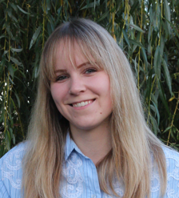
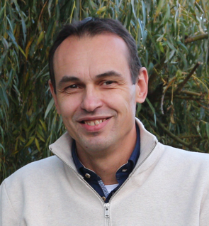

IRENE
Irene Roelofs (2000) groeide op in Borne. Na in 2025 als orthopedagoog in Nijmegen afgestudeerd te zijn, woont Irene weer in het vertrouwde Borne. Irene leeft voor muziek, zowel om op te dansen, als soms een beetje piano te spelen, maar vooral ook om het zingen. Dit doet ze al sinds ze klein is en verspreid over het internet zijn nog filmpjes te vinden van een piepjonge Irene die met veel plezier aan het zingen is op verschillende optredens. Ze zingt naast deze samenstelling tevens in haar band. Buiten het zingen en dansen werkt Irene als dyslexie-behandelaar bij het RID in Hengelo. Ze gaat wanneer het even kan hardlopen en speelt geregeld een pubquiz samen met haar vriend Rik, haar moeder en Jeroen en de rest van haar vrienden. Ze heeft er geen enkel probleem mee om de pubquiz uitgebreid na te bespreken in het plaatselijke café. Daarnaast gaat ze graag met haar vrienden en vriendinnen op stap naar concerten, of om lekker te eten, drinken en bij te praten.

JEROEN
Jeroen Keijzer (1979) groeide op in Winterswijk, ging studeren in Enschede en na zijn studie samenwonen met Anneloes in Bilthoven. In 2009 zijn ze getrouwd en samen hebben ze twee kinderen: Charlotte en Wouter. In 2016 besloten ze terug te verhuizen naar het oosten van het land en kwamen ze terecht in Borne. Sinds 2023 speelt Jeroen mee als toetsenist bij de band van het plaatselijke jongerenkoor Inpajoko. Vanuit daar belandde hij ook in de begeleidingsband van Bee a Singer. Kreeg Irene uiteindelijk zover om auditie te doen voor Bee a Singer en hielp haar daarom ook met voorbereiden voor de audities. Sindsdien vormen ze een muziekduo en maken samen met veel plezier muziek. Als Jeroen niet achter de toetsen zit, werkt hij als business intelligence consultant bij Victa in Borne en helpt hij bedrijven met uiteenlopende BI-vraagstukken. Buiten werk en muziek is hij actief met andere hobby’s zoals hardlopen, luchtvaart, pubquizzen, barbecueën en zal een gezellig cafébezoek met vrienden niet snel afslaan.